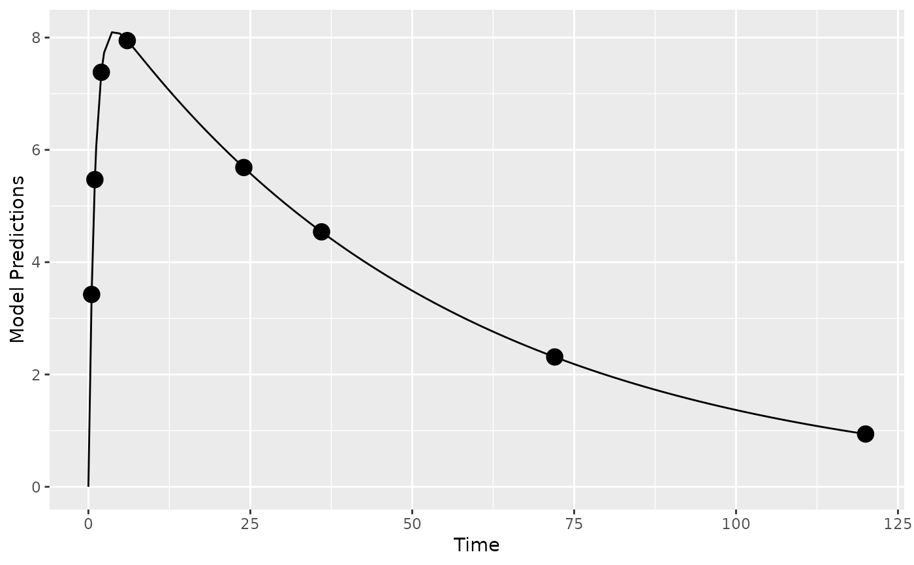

This is a residual unexplained variability (RUV) model function that encodes the model described above.
The function is suitable for input to the create.poped.database function using the
fError_file argument.
Arguments
- model_switch
a vector of values, the same size as
xt, identifying which model response should be computed for the corresponding xt value. Used for multiple response models.- xt
a vector of independent variable values (often time).
- parameters
A named list of parameter values.
- epsi
A matrix with the same number of rows as the
xtvector, columns match the numbers defined in this function.- poped.db
a poped database. This can be used to extract information that may be needed in the model file.
Value
A list consisting of:
y the values of the model at the specified points.
poped.db A (potentially modified) poped database.
See also
Other models:
feps.add.prop(),
feps.prop(),
ff.PK.1.comp.oral.md.CL(),
ff.PK.1.comp.oral.md.KE(),
ff.PK.1.comp.oral.sd.CL(),
ff.PK.1.comp.oral.sd.KE(),
ff.PKPD.1.comp.oral.md.CL.imax(),
ff.PKPD.1.comp.sd.CL.emax()
Other RUV_models:
feps.add.prop(),
feps.prop()
Examples
library(PopED)
## find the parameters that are needed to define from the structural model
ff.PK.1.comp.oral.sd.KE
#> function (model_switch, xt, parameters, poped.db)
#> {
#> with(as.list(parameters), {
#> y = xt
#> y = (DOSE * Favail * KA/(V * (KA - KE))) * (exp(-KE *
#> xt) - exp(-KA * xt))
#> return(list(y = y, poped.db = poped.db))
#> })
#> }
#> <bytecode: 0x564e4be12c80>
#> <environment: namespace:PopED>
## -- parameter definition function
## -- names match parameters in function ff
sfg <- function(x,a,bpop,b,bocc){
parameters=c(KE=bpop[1]*exp(b[1]),
V=bpop[2]*exp(b[2]),
KA=bpop[3]*exp(b[3]),
Favail=bpop[4],
DOSE=a[1])
return(parameters)
}
## -- Define initial design and design space
poped.db <- create.poped.database(ff_fun=ff.PK.1.comp.oral.sd.KE,
fg_fun=sfg,
fError_fun=feps.add,
bpop=c(KE=0.15/8, V=8, KA=1.0, Favail=1),
notfixed_bpop=c(1,1,1,0),
d=c(KE=0.07, V=0.02, KA=0.6),
sigma=1,
groupsize=32,
xt=c( 0.5,1,2,6,24,36,72,120),
minxt=0,
maxxt=120,
a=70)
## create plot of model without variability
plot_model_prediction(poped.db)

## evaluate initial design
FIM <- evaluate.fim(poped.db)
FIM
#> [,1] [,2] [,3] [,4] [,5] [,6]
#> [1,] 746643.9218 1031.526838 485.621863 0.000000 0.00000 0.000000
#> [2,] 1031.5268 16.667994 -3.901736 0.000000 0.00000 0.000000
#> [3,] 485.6219 -3.901736 47.787464 0.000000 0.00000 0.000000
#> [4,] 0.0000 0.000000 0.000000 1076.594563 374.07924 1.295445
#> [5,] 0.0000 0.000000 0.000000 374.079240 17780.60889 15.223541
#> [6,] 0.0000 0.000000 0.000000 1.295445 15.22354 35.681901
#> [7,] 0.0000 0.000000 0.000000 47.625531 142.44395 2.089439
#> [,7]
#> [1,] 0.000000
#> [2,] 0.000000
#> [3,] 0.000000
#> [4,] 47.625531
#> [5,] 142.443949
#> [6,] 2.089439
#> [7,] 86.372695
det(FIM)
#> [1] 2.960928e+19
get_rse(FIM,poped.db)
#> KE V KA d_KE d_V d_KA SIGMA[1,1]
#> 6.508287 3.248953 14.728214 44.184490 37.841158 27.924203 10.959023